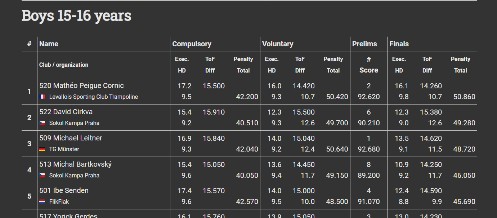
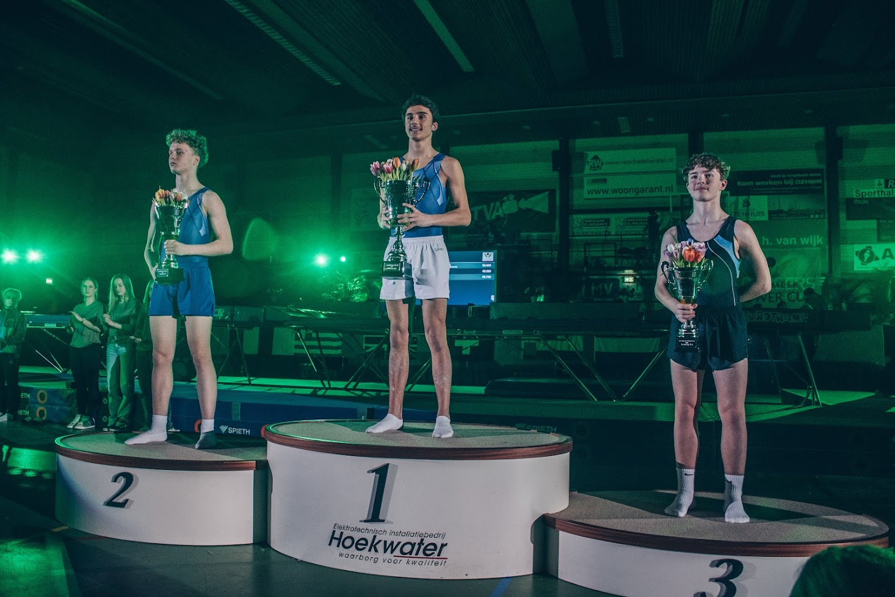

Skoky na trampolíně jako sport
Neboli gymnastika na trampolíně
Skoky na trampolíně jsem si vybral jako sport, protože ho dělám už přes 9 let a přijde mi stále dost neznámý, i když je velmi zajímavý. Aktuálně trénuji 5krát týdně a často se účastním závodů. Doufám, že vám tato stránka přinese zajímavé informace.
Moje kariéra
Se sportem jsem obecně začínal v 5 letech s gymnastikou, která mě ale nebavila, a tak jsem hledal něco zábavnějšího. Po mnoha přestupech mezi kluby jsem nakonec zakotvil v klubu Trampolíny Praha (také známém jako 'Sokol Kampa' nebo 'Trampolíny Kampa'), kde jsem dodnes.
Za ty roky jsem vyhrál spoustu závodů, ať už malých nebo mezinárodních, a nasbíral několik titulů mistra České republiky v různých kategoriích. Momentálně jsem mistrem České republiky družstev za tým 'KAMPA A'. Stále je šance, že své tituly znovu získám, protože pár dní po odevzdání této práce se koná další Mistrovství České republiky.
Aktuálně jsem ve středu reprezentace Česka a mým příštím velkým závodem budou Světové hry ve Španělsku. Mezi mé největší úspěchy patří 2. místo na mezinárodním závodě 'Aalsmeer Flower Cup' letos a 3. místo na mezinárodním závodě přátelství v roce 2023. Dalším velkým úspěchem byla účast na Mistrovství Evropy v roce 2024.
 